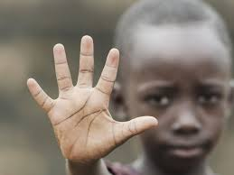

O que é Racismo?
Racismo é a discriminação e preconceito contra indivíduos com base na cor da pele ou características físicas, sob a falsa ideia de que a humanidade é dividida em raças distintas, com algumas sendo superiores a outras. Essa crença não tem fundamento científico, pois do ponto de vista biológico, não existem raças humanas distintas.
Racismo Estrutural

Racismo estrutural refere-se às práticas e políticas institucionais que perpetuam a desigualdade racial. Essas práticas estão enraizadas nas estruturas sociais e econômicas, resultando em discriminação sistêmica contra grupos raciais específicos.
Racismo Cultural
Racismo cultural envolve a desvalorização de culturas e tradições de grupos raciais específicos. Isso pode se manifestar através da promoção de estereótipos negativos e da marginalização de expressões culturais.
Racismo Individual
Racismo individual manifesta-se através de atitudes e comportamentos preconceituosos de indivíduos. Isso inclui ações discriminatórias, linguagem ofensiva e a perpetuação de estereótipos raciais.
Racismo Institucional

Racismo institucional refere-se às políticas e práticas de instituições que resultam em tratamento desigual e injusto de pessoas com base na raça. Isso pode ocorrer em áreas como educação, saúde, emprego e justiça criminal.
Racismo Ambiental

Racismo ambiental é a discriminação racial na criação e aplicação de políticas ambientais. Comunidades de minorias raciais frequentemente enfrentam maior exposição a poluição e têm menos acesso a recursos ambientais de qualidade.